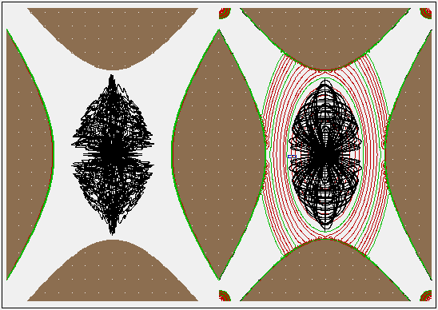
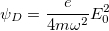
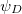
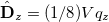
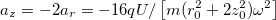
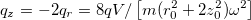

Purpose
This example demonstrates calculating pseudopotentials for an RF ion trap, including plotting and flying particles through them.
Ion motion in an RF trap consists of a slow secular RF motion and a fast RF micromotion. Ignoring the micromotion, the secular motion could be approximated by replacing the RF field with a certain static field. The potential throughout this equivalent static field is called the (Dehmelt) pseudopotential (Dehmelt, 1967 [4]) and provides a simpler way to analyze the field by ignoring time-dependence.

Figure: Side-by-side simulations of particle trajectories in a normal RF trap (left) and the equivalent static pseudopotential well (right). Trajectories are similar, but the latter are smoother (no fast micromotion). 1 eV particles stay within the 1 V pseudopotential contour line (smallest green oval curve).
Theory
The Dehmelt pseudopotential of an RF trap [1,2] is

where m is ion mass (kg), e is ion charge (C), ω is the AC voltage angular frequency (rad/s), and E0 is the AC electric field amplitude (V/m) where

is to be measured.The depth of pseudopotential well in the axial (z) direction for an axially symmetric trap with r02 = 2z02, operated in RF only mode (U=0, az = 0) is approximately

, and the depth in the radial (r) direction is half of this. [3, p.79] Here, as mentioned in the Example: trap example, ion-trap tuning parameters are defined as

(optionally rewriting z0 in terms of r0).Files in the demo:
- README.html - description of this example
- trap.iob - workbench
- trap.lua - user program that applies RF to left trap and derives pseudopotentials for right trap.
- trap.gem - geometry definition for ion trap (2D cylindrical, x mirror) to create trap.pa#/pa0.
- trap-pseudo.gem - same as trap.gem. This exists merely so that trap.iob automatically builds trap-pseudo.pa for storing pseudopotentials in. It doesn't matter whether this contains anything because trap.lua will replace its voltages with appropriate pseudopotentials. However, it's nice that this at least defines electrode points for visualization and particle splatting during the Fly'm.
- traj.fly2 - particle definitions
- trap.con - potential contour values to plot, 0 - 3 V.
Using this demo:
- [1] View trap.iob. (Click View on main screen and select the trap.iob file.) If this is your first time using the example, you will be asked to build/refine the arrays (say OK and click Refine).
- [2] Click Fly'm.. This flies ions side-by-side in two similar ion traps. The trap on the left (trap.pa0) is controlled by RF voltage applied to the vertical ring electrode. The trap on the right (trap-pseudo.pa) is a static field built with potentials set to the pseudopotentials derived from the trap on the left. Contour lines from 0 to 3 volts are enabled on this example, and you see these plotted in the right trap, and this may also be examined in PE views (viewing the pseudopotential well). You'll notice that the particle trajectories in these two traps are quite similar. The main difference is that the trajectories on the right (pseudopotential field) are smoother because they don't have the fast RF micromotion. That is the approximation made by using a pseudopotential representation. Notice also in the particle definitions that the particles start with a KE of 1 eV in random directions at the center of the trap. Therefore, the particles stay within the 1 V (pseudo) potential contour line seen in the right trap (smallest green oval curve). Notice that the depth of the pseudopotential well is twice that in the axial (horizontal) direction as in the radial (vertical) direction, as seen by the middle green oval at 2V. The pseudopotentials at the electrode surfaces are slightly above 1 V and 2 V, as predicted by the Theory section above.
For further details, examine "trap.lua" in a text editor.
See Also
- [1] Computer Simulations of a New Three Rods Ion Optic (TRIPOLE) with High Focusing and Mass Filtering Capabilities D. Salazar, T. Masujima. JASMS 2006. -- discusses pseudopotential calculation in older version of SIMION (7.0). [doi:10.1016/j.jasms.2006.10.007]
- [2] Reconsidering of Slow Fast Method in Deriving Pseudopotential Function for Radiofrequency Traps. 2008. C. Niculae, M. Niculae. University of Bucharest. http://www.nipne.ro/rjp/2010_55_1-2/0013_0025.pdf
- [3] Quadrupole ion trap mass spectrometry. Raymond E. March, John F. J. Todd.
- [4] [Dehmelt1967] H.G. Dehmelt, Adv. At. Mol. Phys., 3, 53 (1967).
- Pseudopotentials
Source/History
2011-12-04 - D.Manura, first version